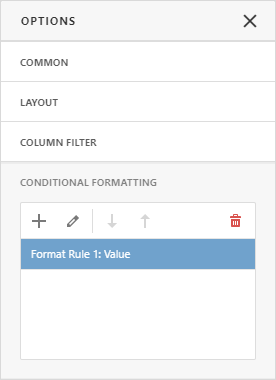
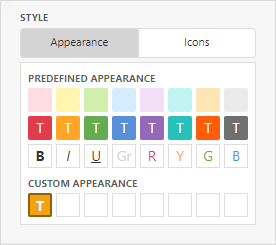

Conditional Formatting
The Web Dashboard supports conditional formatting. You can apply a custom style to data elements that satisfy a certain condition for Grid, Pivot, Chart, Scatter Chart and Card items.

Format Rules
Format rules used in conditional formatting can be categorized as follows:
- Value - Compares static values (Greater Than, Less Than, Between, etc.).
- Top-Bottom - Highlights a specific number of top/bottom values (Top N, Bottom N).
- Average - Highlights values above or below the average value.
- A Date Occurring - Highlights date-time values that are within a specified interval.
- Expression - Uses complex conditions to apply formatting. You can also pass dashboard parameters to expressions.
- Icon and Color Ranges - Display a specific icon based on a value range. You can select a predefined set of icons or apply a specific icon to each range.
- Color Ranges - Apply specific colors to different value ranges. You can select a predefined set of colors or use custom appearance settings to highlight values within specified ranges.
- Gradient Ranges - Apply formatting using gradient color scales.
- Bar - Visualizes numeric values as bars. You can also color bars corresponding to positive and negative values using different colors.
- Bar Color Ranges - Visualize numeric values as bars. Values within a range display a specific color.
- Bar Gradient Ranges - Visualize numeric values as bars. Values within a range display a specific bar gradient.
Format conditions that can be applied to different data item types are as follows:
- numeric
- Value
- Top-Bottom
- Average
- Expression
- Icon Ranges
- Color Ranges
- Gradient Ranges
- Bar
- Bar Color Ranges
- Bar Gradient Ranges
- string
- Value (with the condition type set to Equal To, Not Equal To or Text that Contains)
- Expression
- date-time
- Value
- A Date Occurring (for dimensions with a continuous date-time group interval)
- Expression
- Icon and Color Ranges
- Color Ranges
- Gradient Ranges
- Bar
- Bar Color Ranges
- Bar Gradient Ranges
Create a Format Rule
To create a format rule, open the Conditional Formatting section in the data item menu or in the the dashboard item's Options menu. Click "+" to add a new format rule:

Specify the data item/card used to calculate a condition in the Calculated by field in the Common section. You can use values from one data item to apply the style settings to a different item. To do this, specify the data item in the Apply to section.
Select a condition type from the list in the Common section. Available condition types depend on the data item’s type.

In the Condition section, specify the condition settings and appearance settings.

You can specify additional settings in the Miscellaneous section. For example, you can specify an intersection level for a Pivot or apply a rule to a row in a Grid.
Edit a Format Rule
To edit a format rule, select the rule and click the Edit button.

Click the Delete button to delete the selected format rule.
You can also disable the rule in the Miscellaneous section.

Other settings in the Miscellaneous section depend on the selected dashboard item.
Appearance Settings
You can specify appearance settings in the format rule’s Condition section.
Grid, Pivot, and Cards
For Grid, Pivot, and Card items, you can specify the following settings:
Appearance
In the Appearance tab, select a predefined style from the Predefined Appearance section or specify a Custom Style in the Custom Appearance section.

To create a Custom Style, click on an empty square in the Custom Appearance section. In the invoked Custom Style Settings editor, specify the background color, text color, and font settings:
Icons
You can select an predefined icon from the Icon tab.

Chart, Scatter Chart
Chart and Scatter Chart items have a predefined palette and custom palette. Click a color chip in the Custom Color palette to set a new custom color. You can use the RGB or HSB color model in the invoked color picker to pick any color.

Dashboard Item Format Rule Specifics
See the following sections for more information about specific format settings for dashboard items: